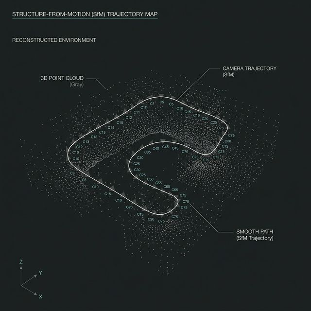
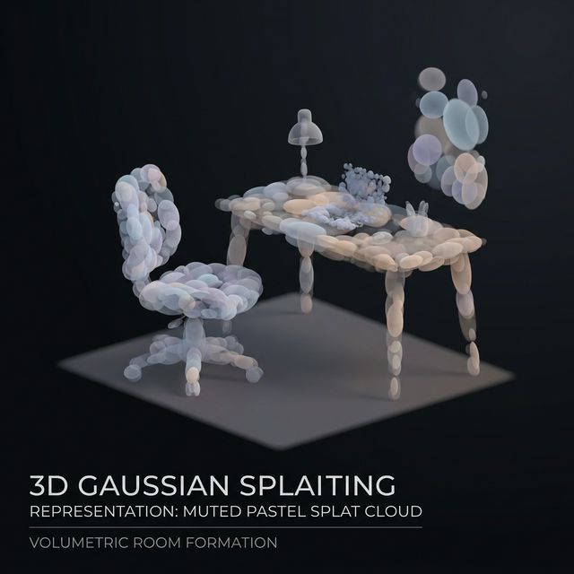
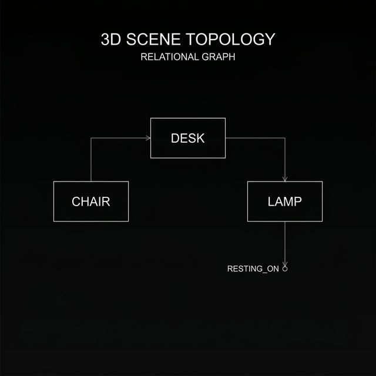

Introduction
Traditional Structure-from-Motion (SfM) architectures provide precise sparse tracking but lack the dense surface representation or semantic awareness required for complex spatial reasoning. This project integrates a unified, three-stage neural reconstruction pipeline that bridges this gap entirely from an RGB video, without relying on active LiDAR depth-sensors.
Our methodology simultaneously extracts raw Geometric Foundations (SfM Trajectory) and high-fidelity Neural Surfaces (3D Gaussian Splatting), which are then mathematically unified into a structured Topological Scene Graph. By intertwining open-vocabulary foundation models (YOLO World + SAM 2) with surface-aligned splatting (SuGaR), we achieve a grounded 3D representation where geometry and semantics are directly queryable through natural language.


